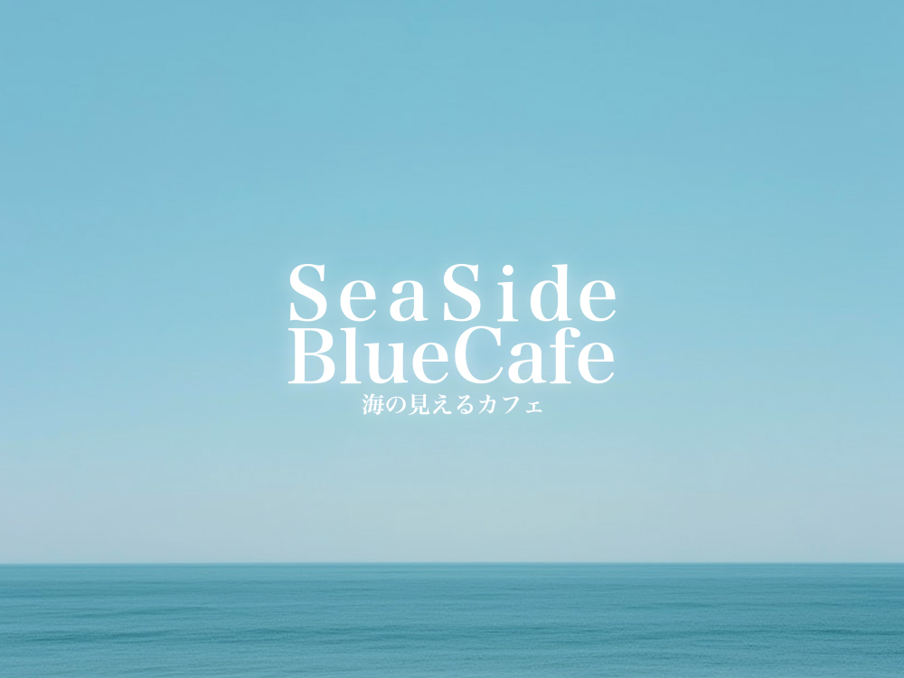
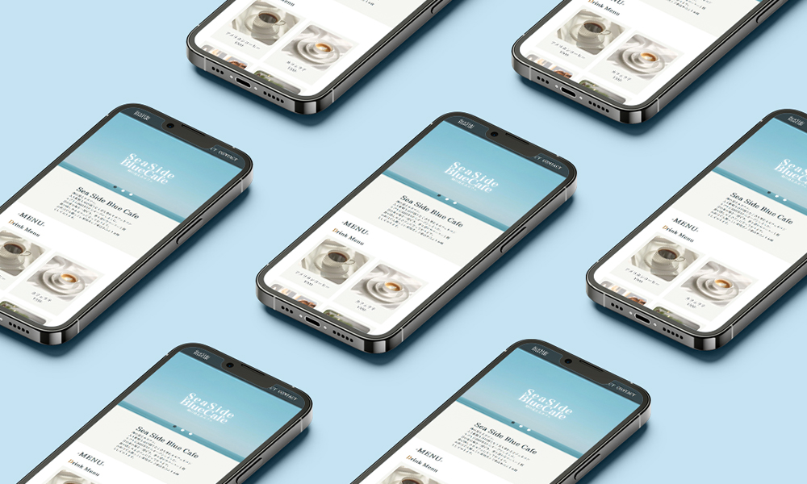

#website
Sea Side Blue Cafe
海沿いにある、人も動物も分け隔てなく立ち寄れるカフェをコンセプトに架空の店舗サイトを制作しました。
シンプルかつ見やすいサイトを目指し、必要な情報もすぐ見れるようなデザイン設計を目指しました。

| ターゲット | ご近所にお住まいの方々、観光客の方々など。 |
| 目的 | お店の魅力をシンプルかつ見やすく訴求したい。 |
| 情報設計 | サイトトップにスライドを設置することで、お店の世界観がすぐに伝わるように設計しました。 各セクションについては、情報を最小限にすることで簡潔にまとめることを意識しました。 |
| デザインプロセス | 近所の方はもちろんのこと、老若男女だれが見てもシンプルでわかりやすいWEBサイトを目指しました。 使用している色を同系統でまとめ、色数を少なくすることでよりシンプルに表現しています。 |
| 制作期間 |
企画、情報設計、WF / 3時間 |
| 使用ツール | VS Code / Illustrator / Photoshop |

お問合せ
デザインのご相談などお気軽にご連絡ください。
メールはこちらへ